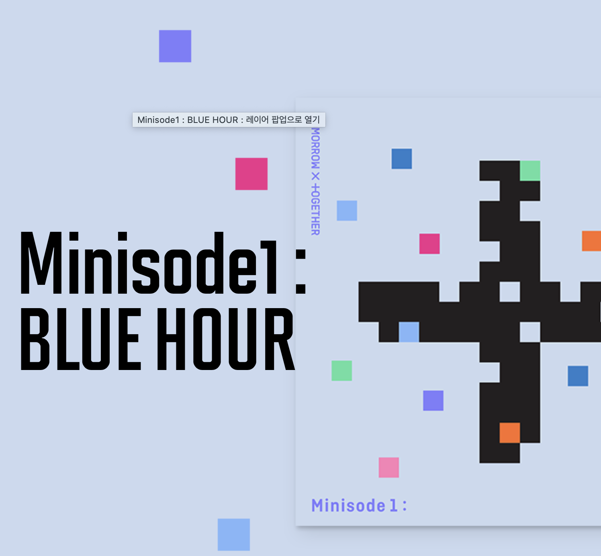

빅히트 엔터테인먼트(영어: Big Hit Entertainment Co.,Ltd.)는 대한민국의 연예기획사이다. 1997년부터 2005년까지 JYP 엔터테인먼트에서 수석 작곡가로 활동한 방시혁이[2] 2005년 2월 1일에 설립했다. 연예·엔터테인먼트 업종에서 매니지먼트 대행, 음반 제작, 무역 사업을 하고 있다.[3] 소속된 연예인에는 방탄소년단, 투모로우바이투게더, 이현이 있다. 초기부터 JYP와는 제휴 관계였고 전략적으로 상당히 가까운 관계에 있다.[4] 2012년 쏘스 뮤직과 합작 걸그룹을 제작하기도 했다. 본사는 서울특별시 용산구 한강대로 40 (한강로 3가)에 있으며 2019년 여자친구가 소속되어 있는 쏘스뮤직과 2020년 세븐틴과 뉴이스트 등의 그룹이 소속되어 있는 플레디스 엔터테인먼트을 인수하였다.
2017년 12월 언론 보도에 따르면 방시혁 대표는 방탄소년단의 전 세계적 성공에 힘입어 빅히트 엔터테인먼트의 상장 가능성을 공개적으로 인정하고 투자자들과 기업공개(IPO)를 검토하고 있는 것으로 알려졌다.[5][6] 2018년 4월 4일 빅히트 엔터테인먼트는 글로벌 게임 업체 넷마블로부터 총 2014억원 규모의 지분 투자를 유치했다고 밝혔다. 넷마블은 빅히트의 지분 25.71%를 확보해 2대 주주로 올라섰다.
2019년 7월 29일, 빅히트 엔터테인먼트는 쏘스뮤직을 인수했다. 빅히트는 "최근 쏘스뮤직의 지분 인수 계약을 완료해 빅히트 자회사로 편입할 것"이라며 "쏘스뮤직은 기존 경영진을 유임해 레이블의 색깔과 독립성을 유지해 운영할 계획"이라고 밝혔다.